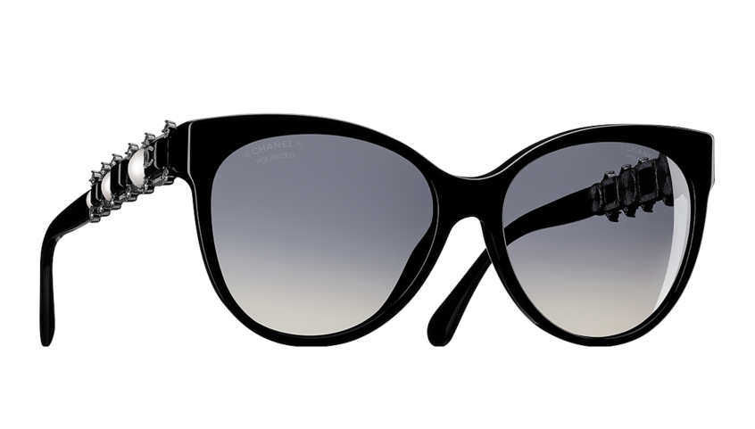

Google Glass
A revolução do Google está chegando
Tecnologia > Inovações
Saiba tudo sobre o Google Glass
por Gustavo Guanabara
Atualizado em 23/Abril/2013
O que é
O Google Glass é um acessório em forma de óculos que possibilita a interação dos usuários com diversos conteúdos em realidade aumentada. Também chamado de Project Glass , o eletrônico é capaz de tirar fotos a partir de comandos de voz, enviar mensagens instantâneas e realizar vídeoconferências. Seu lançamento está previsto para 2014, e seu preço deve ser de US$ 1,5 mil. Atualmente o Google Glass encontra-se em fase de testes e já possui um vídeo totalmente gravado com o dispositivo. Além disso, a companhia de buscas registrou novas patentes anti-furto e de desbloqueio de tela para o acessório.

Google Glass
Uma nova maneira de ver o mundo.
Data de lançamento
Não há uma data específica e oficial para o dispositivo ser lançado, ainda. Pode ser que ele esteja disponível em demonstrações a partir de 2013, mas seu lançamento para as lojas fica para, pelo menos, 2014.
Especificações Técnicas
Tabela técnica do Google Glass Mar/2013 Tela: Resolução equivalente a tela de 25" Câmera: 5MP para fotos / 720p para vídeos Conectividade: Wi-Fi/ Bluetooth Memória Interna: 12GB
Como funciona
De acordo com fontes próximas do Google, os óculos vão contar com uma pequena tela de LCD ou AMOLED na parte superior e em frente aos olhos do usuário. Com o uso de uma câmera e GPS, você pode se situar, assim como selecionar opções com o movimento de cabeça.
O que você pode fazer com o Google Glasses
O vídeo de divulgação do Google mostra que você pode se transformar em uma espécie de "super-